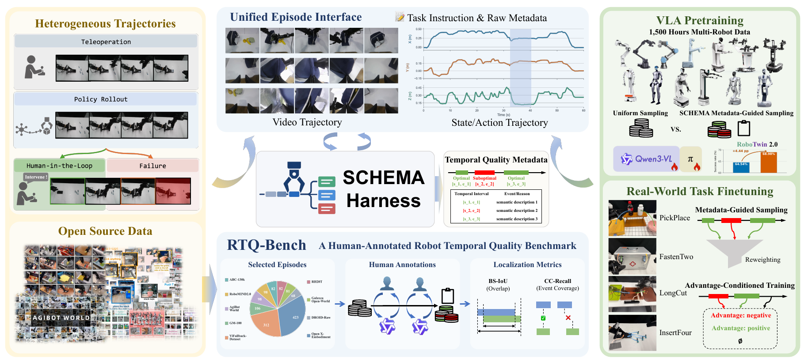
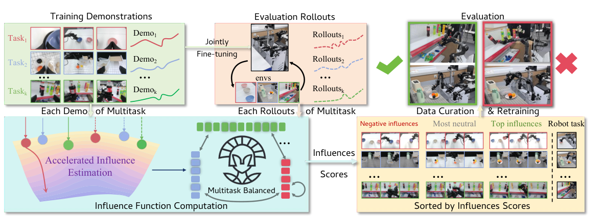
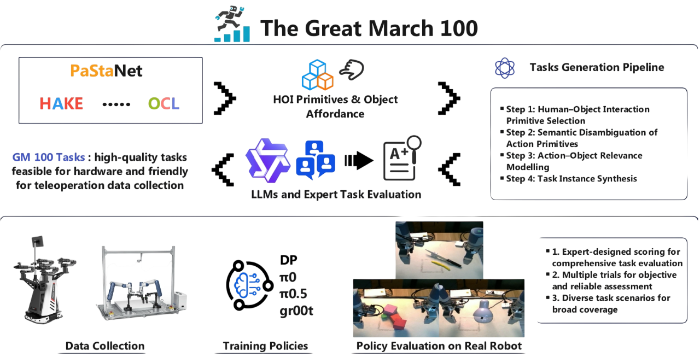
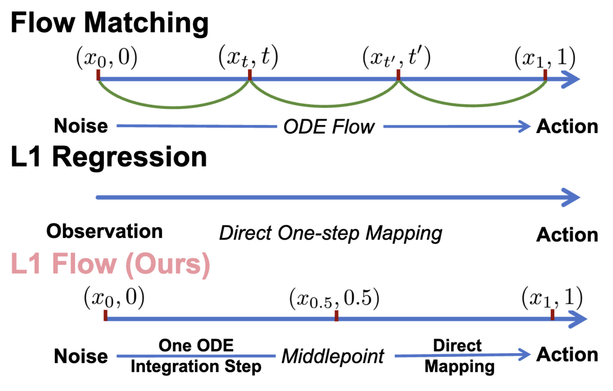
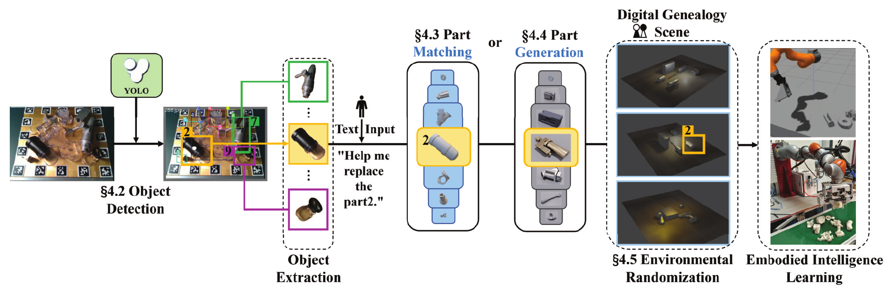
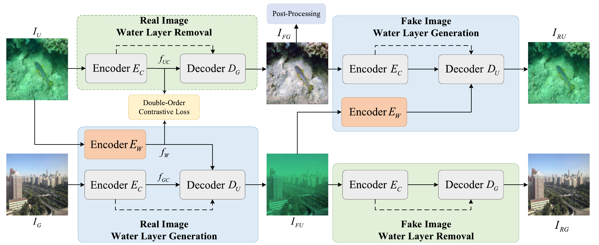

曾宪超
我是北京航空航天大学与上海创智学院的联合培养博士研究生，在 RHOS Lab 开展研究。导师为李永露、卢策吾（上海创智学院/上海交通大学），任磊（北航）。
我的研究聚焦于具身智能，主要关注 VLA / WAM、强化学习，以及具身空间理解与推理，希望让机器人更好地理解物理世界，并从数据与交互经验中学习可靠的操作技能。
📚论文
* 表示同等贡献，† 表示通讯作者。
Not Every Step Is Progress: Event-Grounded Credit Reassignment for Robot Policy Optimization
CCF A 类会议投稿中
Xianchao Zeng, Youcheng Li, Xinyu Zhou, Yuhao Chao, Weixi Song, Tao Xu, Jiabao Dong, Li Shang, Lei Ren†, Yong-Lu Li†

SCHEMA: Scalable Harness-Guided Temporal Quality Metadata Construction for Robotic Manipulation Learning
CCF A 类会议投稿中
Xinyu Zhou*, Yuhao Chao*, Xianchao Zeng*, Youcheng Li, Chenyuan Liu, Tao Xu, Weixi Song, Li Shang, Yong-Lu Li†

CoRL 2026
Tao Xu, Jiaxin Wang, Runhao Zhang, Jiayi Guan, Xianchao Zeng, Weixi Song, Xinyu Zhou, Zhetao Chen, Guang Chen, Yong-Lu Li†
CVPR 2026
Xianchao Zeng, Xinyu Zhou, Youcheng Li, Jiayou Shi, Tianle Li, Liangming Chen†, Lei Ren†, Yong-Lu Li†

arXiv 2026
Ziyu Wang, Chenyuan Liu, Yushun Xiang, Runhao Zhang, Qingbo Hao, Hongliang Lu, Houyu Chen, Zhizhong Feng, Kaiyue Zheng, Dehao Ye, Xianchao Zeng, Xinyu Zhou, Boran Wen, Jiaxin Li, Mingyu Zhang, Kecheng Zheng, Qian Zhu, Ran Cheng, Yong-Lu Li†

arXiv 2025
Weixi Song, Zhetao Chen, Tao Xu, Xianchao Zeng, Xinyu Zhou, Lixin Yang, Donglin Wang, Cewu Lu, Yong-Lu Li†

IEEE Transactions on Automation Science and Engineering (TASE), 2025
Lei Ren†, Jiabao Dong, Xianchao Zeng, Lingyuan Yang, Yuqing Wang

IEEE Transactions on Geoscience and Remote Sensing (TGRS), 2024
Jiankai Yin, Yan Wang, Bowen Guan, Xianchao Zeng, Lei Guo†
🎬真机演示
寻找并递交玩偶
找到指定玩偶并递交给参与者。该任务曾获 CCTV-13 新闻频道现场直播报道。
双臂协作切香肠
双臂协同取放香肠、切分，并将切好的小块移至托盘。
微波炉操作
打开微波炉，放入不同食物，再关闭炉门。
切分橡皮泥
取下塑料刀，将橡皮泥切开，再将刀放回。
USB 插接
抓取 USB 线，并插入固定接口。
多样物体收纳
将桌面上各种物体放入盒子。
🎓教育经历
2024.09 — 至今北京航空航天大学/上海创智学院
联合培养博士研究生 · 控制科学与工程 · 预计 2028 年毕业
导师：李永露、卢策吾（上海创智学院/上海交通大学）；任磊（北航）
北京航空航天大学
模式识别与智能系统 · 硕士研究生（硕转博）